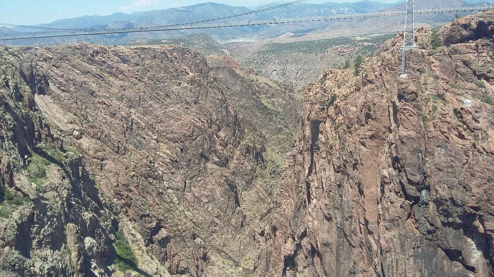
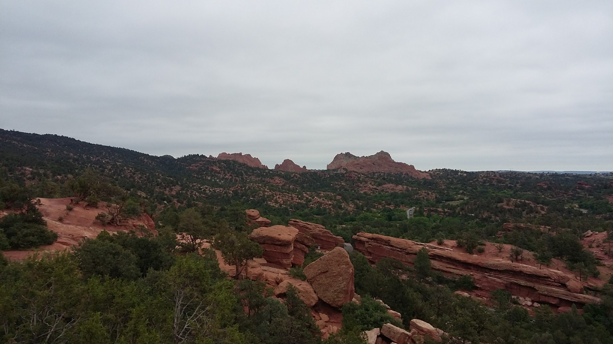

Colorado
I visited a lot of cool places in Colorado. I mountain biked down Pike's Peak. I climbed rock formations at The Garden of the Gods. I sledded down sand dunes at The Great Sand Dunes National Park. We also visited Cañon City when there. As the name of the city suggests, they had a huge canyon that they were home to. An image of it can be seen to the right.
Garden of the Gods
I think the most impressive thing we saw there was The Garden of the Gods. It is a huge swath of land, filled with amazing natural rock formations that was donated to the state by a private citizen, who gave the condition that it always be open and free to enter to anyone. The place is absolutely massive. I, at one point, wandered away from the group and just, climbed a large rock plateau, and recorded a video for my family. It was an amazing experience. The image to the left is taken from that rock plateau.